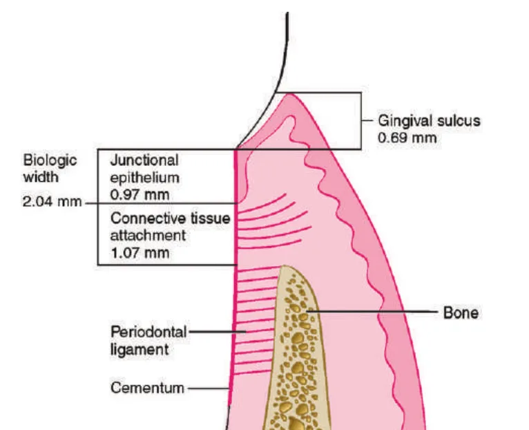

نسخه استخراجشده؛ ترجمه یا تأیید علمی انجام نشده است. وضعیت: captured
اتصال طبیعی لثه از دو جزء ساخته شده و هر جزء ضخامت و ماهیت متفاوتی دارد:
و ترکیب این دو، «عرض بیولوژیک» نامیده میشود. صریح بدان: «دو میلیمتر حداقل فضایی است که لثه برای چسبیدن به ریشه نیاز دارد.»
به ترتیب مقاومت دقت کن: جزء همبندی قوی است و جزء اپیتلیالی ضعیفتر. و جزء اپیتلیالی کرونالیتر است؛ یعنی نزدیکترین بخش به لبهی ترمیم تو، همان بخش ضعیفتر است.
و اعداد سولکوس سالم، که با عرض بیولوژیک فرق دارند: «در سلامت، عمق سولکوس میان ۱ میلیمتر در سطوح فاسیال و لینگوال و ۲ تا ۳ میلیمتر بیندندانی متغیر است.»
و یک تذکر آماری که نباید فراموش شود: «این اعداد میانگین هستند و هر بیماری را توصیف نمیکنند. مقادیر میانگین برای فهم مفهوم عرض بیولوژیک کافیاند؛ ولی عرض بیولوژیک واقعی یک بیمار مشخص تنها با برقرار کردن سلامت لثه و اجازه دادن به عرض بیولوژیک برای تثبیت خودش قابل تعیین است.»
و عدد مشهور ۲٫۰۴ میلیمتر: «هرگونه تجاوز به این فضای ۲٫۰۴ میلیمتری به واکنش التهابی میانجامد.» — عددی که از مطالعات کلاسیک میآید و باید در کنار میانگین بودنش به یاد بماند.
و اکنون یک نقد روششناختی مهم که خیلیها نمیدانند. روشی که برخی توصیه میکنند — پروب کردن از میان اتصال تا سطح استخوان و کم کردن عمق سولکوس — «غیرقابل پیشبینی در نواحی استخوان نازک» است.
و دلیل فنیاش دقیق است: «انتهای گرد پروب پریودنتال ممکن است روی کرست استخوان متوقف نشود و از کنارش سُر بخورد» — و این دقیقاً در سطوح فاسیال بیشتر دندانها اتفاق میافتد، جایی که استخوان نازک است.
و راهحل جایگزین: در بیماران با استخوان نازک، برخی استفاده از یک سوزن بیحسی موضعی با بِوِل رو به بیرون از دندان را برای سوند زدن (bone sounding) کرست استخوانی نازک دندانهای قدامی پیشنهاد میکنند.
پیام عملی این درس را دستکم نگیر: عرض بیولوژیک یک عدد جهانی نیست که بتوانی از حفظ برای هر بیمار به کار ببری. عدد میانگین برای فهمیدن مفهوم است؛ برای تصمیم گرفتن روی یک بیمار مشخص، اول باید سلامت لثه را برقرار کنی و بگذاری خودش جای واقعیاش را پیدا کند.

عرض بیولوژیک یک مفهوم نظری نیست؛ مستقیماً به یک عدد اجرایی روی لبهی تراش ترجمه میشود.
قاعدهی کلی: «فینیشلاین تراش دندان تا جای ممکن نباید در اتصال پریودنتال قرار گیرد. اگر جایگذاری داخلسولکوسی ضروری است، باید بیش از نصف عمق سولکوس لثهای نباشد.»
و حالا حساب و کتابش را با هم انجام دهیم — این محاسبه، هستهی تصمیم بالینی است:
این یک قاعدهی نسبی است، نه یک عدد مطلق. «نصف عمق سولکوس» یعنی هرچه سولکوس بیمار کمعمقتر باشد، فضای مجاز تو کمتر است. در سولکوس فاسیال ۱ میلیمتری، سقف تو نیم میلیمتر است؛ در سولکوس بیندندانی سالم ۳ میلیمتری، لبه را میتوان ۱ تا ۱٫۲۵ میلیمتر زیرلثهای برد — کمی کمتر از نصف عدد پروب. و بدان: هرچه سولکوس عمیقتر، احتمال تحلیل لثه پس از هر درمانی بیشتر است.
و شرط بافتی که پیش از هر لبهی زیرلثهای باید چک شود: «یک ملاحظهی کلی این است که حداقل ۳ میلیمتر بافت همبند متراکمِ چسبنده باید حضور داشته باشد تا سلامت لثهی قابل قبول پیشبینی شود، وقتی قرار است لبهی ترمیمی زیرلثهای قرار گیرد.»
این عدد ۳ را با عدد ۵ درس پیش کنار هم بگذار: ایدهآل، ۵ میلیمتر بافت همبند متراکم که ۳ میلیمتر آن چسبنده باشد؛ و حداقلِ لازم برای مجاز بودن لبهی زیرلثهای، همان ۳ میلیمتر چسبنده است.
و یک تصمیم که پیش از تراش گرفته میشود، نه حینش: دو عامل مؤثر بر شدت پاسخ التهابی — سلامت سیستمیک بیمار و بیوتایپ لثه — «بیرون از کنترل دندانپزشک» هستند. ولی «با آگاه بودن از سلامت سیستمیک و بیوتایپ، دندانپزشک میتواند پیش از تصمیم به جایگذاری ترمیم زیرلثهای انتخاب کند».
و سه عاملی که در کنترل دندانپزشک هستند — این سه را حفظ کن، چون تنها اهرمهای تو هستند:
و پیامد این تفکیک روشن است: اگر بیمار بیوتایپ نازک دارد، نمیتوانی آن را عوض کنی — ولی میتوانی تصمیم بگیری لبه را زیرلثهای نبری. انتخاب، پیش از تراش اتفاق میافتد.
نوع سؤال: ساخت کلمه · 7 خانه
حروف منبع: ت · ی · ا · ه · ا · ل · ب